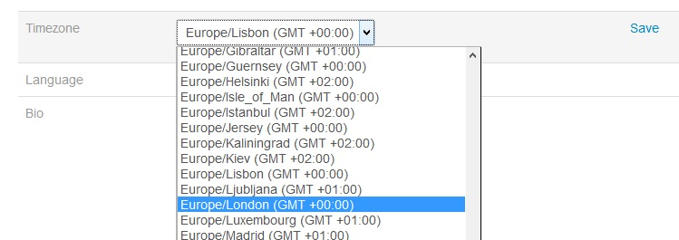

On extended branch: https://github.com/emoncms/emoncms/pull/303
Fixes timezone issues for people with server on diferent timezone of browser.
Now user selects timezone from the internal php list and even day light saving time is correct across the year.
Also fix midnight issue to day comulators like kwh/d.
All tested.


Re: [Release] EmonCMS - Fix all timezone issues.
A very welcome update chaveiro, it should sort a lot of ongoing issues which are being regularly reported in the forum.
Paul
Re: [Release] EmonCMS - Fix all timezone issues.
Hi chaveiro, Can you elaborate a little? What in your opinion was at fault? and how does what you propose solve that?
I have had a look at your commit and I'm my PHP isn't up to working out what you've done and why. This is a huge, core topic that has many implications, the effects of which wouldn't necessarily manifest until further down the line possibly at year end, DST start/end or a leap year.
You have linked to 4 open issues on github using "fixed in #303" a fuller explanation for the contributors and visitors to those threads would indicate you understand the issue and that what you propose may work. There are many additional unresolved threads here on the forum too.
I (and many others I'm sure) appreciate your effort and welcome any fixes in this area, but would like to know more before diving in.
I think the core question is what time is used where? is all the data stored using unix time only, without any timezone changes and then manipulated when read for visualization and calculation etc?
Paul
Re: [Release] EmonCMS - Fix all timezone issues.
Hi Paul, i will try to keep it simple:
All feed data are saved in epoch seconds from 1/1/1970 00:00:00 that per definition is in UTC (not GMT). This is standard linux, no change here. This is what is saved to input and feed engines.
To know the start of a day we must know user local timezone and that is a calculated conversion from epoch timezone, the result of calculation gives a new epoch value corresponds to the user timezone midnight. (fix in process_model.php)
Feeds that are per day accumulator must be based on owner timezone. This means that if your feed is public and you share to a diferent timezone user, they will see your midnight on their offset. It's no bug, the reason is that the owners midnight cant change.
The core emoncms used an offset in hours from GMT. But some timezones have 15 minutes offset and could not be applied correctly. Also DST changes are diferent for various countries. So too maintain compatibility i kept the User/timezone.json returning an offset but now in seconds instead of hours but this values is now calculated on the fly for the particular user timezone. Then updated php files that used this values on various parts of emoncms to use the php core DateTime class that takes care converting timezones (including DST changes) for us by using the standard timezones codes associated to the user.
There is also a change in database user table schema to support the timezone name instead of hour offset.
All javascript related timezone were already dealt by the javascript itself.
Json gives always result values in epoch (UTC). And conversions are applied in JS to the client browser timezone. No change here.
After updating to this fixed version, you must select your timezone in user panel. Then all day feed accumulator (like kwh/d) past data might need an offset fix. If you have a database engine it's easy as add/subtract the correct value to the old data. This is to fix users reporting that day starts at 8'o clock (or not mid night).
Re: [Release] EmonCMS - Fix all timezone issues.
This all sounds good, but I still can't determine what was wrong and what has changed in relation to some of the issues. For example I am in the UK using GMT/BST and have experienced issues with DST, I understand you have changed from 1 hour to 3600 seconds and how midnight is determined for "other" time zones but neither of these should effect GMT/BST.
Would I be correct in assuming the server time will have absolutely no impact on either the timestamp saved (as that is unixtime derived from ntp) or the query results as their time references are taken from the client/browser?and that you have made no change to that functionality, it was already working that way?
Paul
Re: [Release] EmonCMS - Fix all timezone issues.
Yes, linux epoch value does not 'leap' from timezone or DST events.
Main issue was design error. User specified a fixed GMT offset but on DST this offset changes.
Other issue was that midnight was not being correctly calculated for timezones other than GMT.
To confuse a little UTC != GMT != BST != DST :)
Always use location code. ex.: Europe/London. Systems must have mapping for the timezone rules / location updated regulary as the mapping can change. (ex.by politics decision)
Re: [Release] EmonCMS - Fix all timezone issues.
I am well aware how "epoch time" should work and I am familiar with the differences between the "times".
What I do not understand is why if you have only made changes to how the offset works and no change was required when using a 0 offset, then why when previously using a 0 offset resulted in an error at the beginning and end of BST when DST was applied? epoch didn't change and the fixed 0 offset didn't change and yet issues occur. If you have not made changes to effect this behavior then it will remain!
I think I will have to look at the code and work this out for myself. I'm not questioning whether your fixes to the timezone or the daily totals work and I fully understand your reasoning there. My specific interest is in the previous "UTC +0:00" issues with BST. I'm trying to understand how something that was previously broken that you apparently haven't changed is now fixed ??
I hope it is fixed, it may well be fixed. I was just hoping to understand cause and cure to know it was fixed. but I guess we can put it to the test next weekend.:-)
Paul
Re: [Release] EmonCMS - Fix all timezone issues.
Thanks Chaveiro for your work on this
I think there may be two separate issues here and that the bug created at the last change from BST that resulted in a negative kwhd value is as Paul mentioned independent of the user timezone offset setting.
I've been testing changing the localtime to see if I can reproduce the error that we had last time and I cant seem to replicate it, it appears to work fine through local time changes, If I change the system time (equivalent of changing utc) then I can replicate the error, but I would expect that as then any of the time difference calculations would either result in a negative value if the time change is backwards leading then to a negative kwh value or just a larger kwh value if the time change is forward 1 hour.
Emoncms should run on UTC and be independent of localtime changes so that the current time minus last time always returns the correct time difference in seconds which is then used for kwh increment calculations in processes such as power_to_kwhd.
If I understand correctly the default settings for system time on a ubuntu server should be independent of the localtime but perhaps that isnt always the case.
I've created a test script to check how php handles changes to localtime
<?php
// date_default_timezone_set('UTC');
print "Default php timezone: ".date_default_timezone_get()."\n";
$time = time();
print "time as given by time(): ".time()."\n";
$strtime = date("Y-n-j H:i:s", $time);
print "time in format: Y-n-j H:i:s: $strtime\n";
$time2 = strtotime($strtime);
print "strtotime on (Y-n-j H:i:s): $time2\n";
$startday = mktime(0, 0, 0, date("m",$time), date("d",$time), date("Y",$time));
print "start of day time as used in input processor: ".$startday."\n";
print "time now minus start of day time in hours: ".(($time - $startday) / 3600)."\n";
with date_default_timezone_set('UTC'); commented out changes to local time resulted in a different $startday time. That doesnt explain the negative kwh value but it may explain an offset in the time of a daily value.
It looks like it would be a good idea to add:
date_default_timezone_set('UTC');
to the top if index.php as an initial step. I could also add some sanity checks to the input processors to check that the time difference between current time and last time is not negative.
Re: [Release] EmonCMS - Fix all timezone issues.
I've set the localtime timezone settings on emoncms.org with:
sudo dpkg-reconfigure tzdata
to Etc/UTC
which may be the equivalent of setting php to use UTC only with:
date_default_timezone_set('UTC');
Re: [Release] EmonCMS - Fix all timezone issues.
I've always had trouble getting my head around what the intended result is. Let's say the house being monitored is in Sydney, the emoncms server is in London, and the viewer and his webbrowser are in Sydney.
I assume any per-day totals in that case are meant to be measured midnight-to-midnight Sydney time, right? When Sydney puts its clocks forward 1 hour for summer time are they now measured midnight-to-midnight using the clock on the wall (i.e. an hour earlier than they were) or are they now measured 1am-1am using the clock on the wall (i.e. at exactly the same time they used to be measured). I guess either would work but the former introduces a 1hr jitter to the length of days at the beginning and end of summer time.
Now lets say the viewer and his webbrowser head off to San Francisco and want to check out their Sydney house remotely (server still in London). Presumably you want the per-day totals to still be anchored in Sydney time and not to be impacted by the http client timezone?
Re: [Release] EmonCMS - Fix all timezone issues.
Hello dBC, my long term plan is to make daily kwh data independent of timezone by moving over to recording the total accumulating watt hours and then calculating daily data on the fly when you want to view a graph, I detailed this in more detail here: http://openenergymonitor.org/emon/node/3995
There are quite a few things that are needed to get this to fully work. The browser would need to know what timezone to request and Im currently working on a fix to the phpfina feed engine that will fix the issue that caused some days to return null values.
But yes its the behaviour you detail that is the expected result. I think Chaveiro's recent work aims to fix this for the existing kwh/d daily data method.
Re: [Release] EmonCMS - Fix all timezone issues.
Don't use date_default_timezone_set() in PHP scripts, set it in php.ini to be the same as linux timezone or epoch may return incorrect.
Use DateTime.Timezone class to do timezone conversions instead.
Setting system Timezone to 'UTC' is bad because different UTC countries may have diferent DST settings. Always use localized timezone, ex.: Europe/London.
From google: "Zones like Etc/GMT+6 are intentionally reversed for backwards compatibility with POSIX standards. You should almost never need to use these zones. Instead you should be using a fully named time zone like America/New_York or Europe/London or whatever is appropriate for your location."
Re: [Release] EmonCMS - Fix all timezone issues.
Regarding DBC question, daily kwh/d is timezone dependent on the sensor timezone.
Emoncms expect a user account to be in one timezone and all sensor nodes to be in the same timezone.
You cant have one account with nodes from diferent timezones, for that create a user for each different timezone and group nodes on the same instalation timezone to the user account with that timezone.
Browser device timezone only affects viewed data.
If nodes are in Sydney, set user timezone to Autralia/Sydney, independent of where server is.
If it's 23h in Sydney and client browser device is in London timezone, he will see 'now' data at London 12h (Sydney is 11h ahead of London).
Re: [Release] EmonCMS - Fix all timezone issues.
Hi Trystan, I think you are probably right there are 2 distinct areas of concern, but the "daily totaling" seems to make it extremely difficult to separate them, I was perhaps optimistic the "Fix all timezone issues" title did in fact mean just that, but unable to confirm this with any real confidence from the code myself.
My overall concerns are with global use, but wouldn't expect any other timezone to be correct unless UTC/GMT/BST functioned correctly hence using my own experience as a case study.
Last autumn there were several errors reported and at the time I felt the cause was an overlap causing issues with read-only feeds and whaccumulators, the clocks go forward this weekend so the potential issues will be different.
The "daily totals" will always be problematic no matter what, even when the timezone side of things is functioning well if you edit any past data the "daily totals" are not updated. The "on the fly" method will bring so much flexibility and improve accuracy whilst reducing the number of feeds, simplifying process lists and reduce size on disk. (the same applies to max and min daily feeds)
So putting "dailies" to one side for a moment it becomes clearer (to me at least) that the 2 distinct areas are saving the data which should always be unix time aka epoch and then reporting the data which should be in the target timezone.
Since most incoming data starts with a unix timestamp I would expect that to be saved untouched but I assume it does/did go through some form "time zone adjustment" for overlaps to occur. Can you confirm if any adjustments are done? If they are I assume they are offset for the dailies which should happen only for the dailies.
When a data frame arrives via the api without a timestamp is it given a unix timestamp or is it given a local timestamp? and by that I'm referring to the servers localtime rather than the users localtime ie is emoncms making a DST adjustment independent of user timezone?
My ambition here was to determine whether we are always saving all data points in unixtime regardless of feed type, time of year or time zone. because IMHO this is essential for anything else to work. everything else is reliant on this.
I also wonder whether we need to be defining "which" unix time aka epoch we should use since there should only be one. if it needs to be defined does this not suggest it's not correctly defined on the server and localtime is being used?
chaveiro - regarding your reply to dBC above, I agree that is currently the better way as the daily totals are TZ dependent, can you confirm if whilst viewing a realtime graph for a property in Sydney from San Francisco that the time window displayed would be labelled in Sydney localtime intervals ie account TZ NOT browser time
Paul
Re: [Release] EmonCMS - Fix all timezone issues.
"When a data frame arrives via the api without a timestamp is it given a unix timestamp or is it given a local timestamp? and by that I'm referring to the servers localtime rather than the users localtime ie is emoncms making a DST adjustment independent of user timezone?"
Here's my two penn'orth:
Provided that the data is only generated, stored and used within one timezone, it doesn't matter. Once any one of those conditions is broken, it does matter and so that emonCMS.org and (local RPi) emonCMS can remain the same piece of software, and so that a user who has enabled web access can get the correct view in San Francisco of his data from Sidney, the only way to do it is for everything to be stored in Unix time and to convert to and from Unix time each time the data enters or leaves the database.
If you use a local timestamp, DST gives you almost exactly the same problem as does a different timezone. If you want to use a "local" time for labelling data in the database, it must remain at a static offset with respect to Unix time and not shift with DST.
Re: [Release] EmonCMS - Fix all timezone issues.
I think we're on the same page
I agree with that 100% and would prefer we used ONLY unix time for storing data, but as I suspect this has not been the case previously I am trying to establish if that is by design or error.
My question to chaveiro was to confirm that perceived "local time" was the accounts TZ thoughout and not further confused by user location. The only 2 real "times" in play should be unix time for all recorded datapoint timestamps and the "local time" which should be the DST adjusted TZ of the account, (probably the property location but not mandatory.) used for ALL reporting and graphing, plus reseting the "dailies" until "on the fly" totals are implemented.
Paul
Re: [Release] EmonCMS - Fix all timezone issues.
Thanks for your thoughts on this. Most of the timing in emoncms is done with time() which should be UTC and so not be affected by DST changes.
There is a slightly confusing remnant from when timestamps where not recorded as unix timestamps in the feed last time:values. These are stored in the format $strtime = date("Y-n-j H:i:s", $time); and then converted back to unix time $time2 = strtotime($strtime); That conversion appears to work fine under locatime changes with the same unix time stamp being returned as was used in the date function. Id like to remove that and just use unix timestamp throughout because there's no point storing the timestamp in the Y-n-j H:i:s format anyway.
The way the midnight time is currently calculated for daily data is here https://github.com/emoncms/emoncms/blob/master/Modules/input/process_mod.... The desired result here is for it to return midnight UTC and then for the - ($this->timezoneoffset * 3600); I realise now that I got this wrong as mktime is affected by system localtime. It looks like chaveiro's suggestion of using:
$now = DateTime::createFromFormat("U", $time_now);
$now->setTimezone(new DateTimeZone($this->timezone));
$now->setTime(0,0); // Today at 00:00
return $now->format("U");
would fix this as the $this->timezone input is default "UTC" or "Europe/London" etc and as long as DateTime handles this all correctly then the output should be a unix timestamp that corresponds to midnight in the users timezone.
Re: [Release] EmonCMS - Fix all timezone issues.
The switch from the current implementation to chaveiro's suggestion will need some thought as the current use of
mktime(0, 0, 0, date("m",$time_now), date("d",$time_now), date("Y",$time_now)) - ($this->timezoneoffset * 3600);
should work ok if the timezoneoffset = 0 and the server's localtime is the users timezone for local/rpi or own server installs. If the change of implementation leads to a period where the timezone changes to UTC and then back to the correct user timezone that would cause some misaligned data. I cant see anything that would stop this from happening at the moment but would probably only be a minor thing to fix.
Re: [Release] EmonCMS - Fix all timezone issues.
Check this: https://github.com/emoncms/emoncms/pull/309
Re: [Release] EmonCMS - Fix all timezone issues.
Following the UK DST changeover, all previous daily feed data has disappeared!!
See this post
Paul
Re: [Release] EmonCMS - Fix all timezone issues.
Did this ever get in? My kWh/d resets at UTC instead of my time.